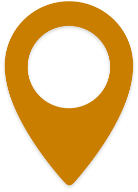

By recycling impacted soils, we can avoid costly intermediate solutions like landfills. Our commitment to resourcefulness means we find new environmentally friendly uses for contaminated soils instead of just moving the liability elsewhere.
Businesses shouldn't have to choose between doing the right thing for the environment and saving money. We are committed to offering significant savings on remediation costs. When we can accomplish the same goals with less resources both businesses and the environment benefit .
Why pass the liability to the next generation? Our commitment to sustainability means we don't just move contaminants, we elimiate them. We think our children shouldn't have to deal with our contaminants, just in a different location.
Want to learn more about Norstar Environmental or curious about recycling other materials?
780 414 6088
12345 Street
meaghan@norstarinds.com